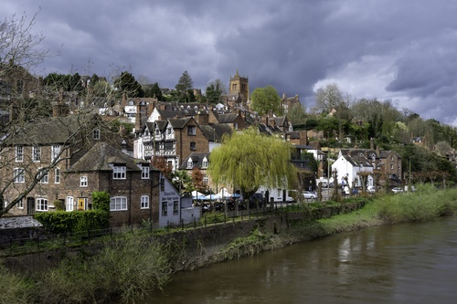

The earliest mention of Bridgnorth in historical records was in 895 when the Danes set up a camp at ‘Cwatbridge’. In 912 Ethelfleda, the lady of Mercia and King Alfred’s daughter, built a castle at ‘Bridge’.
The same year, Roger de Montgomery founded a church at Quatford dedicated to St Mary Magdalene. Robert de Belleme, son of Roger, succeeded as Earl in 1098 and in 1101 he transferred both church and borough to a more defendable site at Bridgnorth.
In 1102 Henry I besieged Bridgnorth for three months and took it from Robert de Belleme. The town then began to extend into the High Street and became a ‘Royal Peculiar’. This meant its church was not subject to a bishop’s rule, and the king became its Patron.
In 1157 Bridgnorth received its first Royal charter.
In 1295 Bridgnorth sent its first members to Parliament.
In 1646 Bridgnorth was held for the King during the Civil War, but on 31 st March, Parliamentary forces forcibly entered the town. On 26 April 1646 the Castle surrendered to Royalist forces and during the next year was virtually destroyed.
For many centuries, Bridgnorth was an extremely busy river port. Merchandise was ferried down river in trows or barges and pulled up the river by teams of four to eight men harnessed to a tow rope. Bridgnorth’s early trades included malting, tanning, weaving, nailers, drapers and iron founders.
East Castle Street c1786. In 1101 houses built within the outer bailey of the Castle formed the original East and West Castle Street. The present street was developed in 1786 by Dr Anthony Weaver, who owned most of the street, with the Thomas Telford Church, St Mary Magdalene, being built between 1792-96.
Governor's House c1633 : The former residence of the Castle Governor originally stood within the outer bailey of Bridgnorth Castle. One of only a few substantial dwellings in the castle precincts, King Charles I came here in 1642 and 1645 when it was a royalist Garrison for Shropshire.
No. 26 : Thomas Telford (1757-1834), Engineer and Architect, Lived here 1792
No. 15 : Reverend Squadron Leader Herbert Cecil Pigh G.C., M.A. (Oxon), Born 1898, Killed in Action 5th July 1941, Chaplain at RAF Bridgnorth, The only member of the clergy awarded the George Cross, Lived here 1940-1941
The cliff railway.
General views of the town.
The High Street.


SE & A Ridley Ltd Seeds.